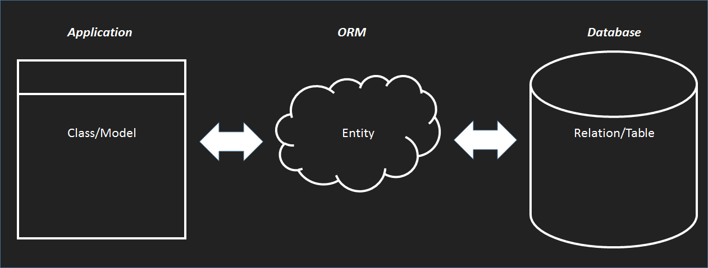

Web Frameworks
A Comparative Overview
VIA UC, November 2015
Kristofer Carta, ICT
What we'll cover
- Benefits of Frameworks
- Architecture
- MVC
- N-Tier
- Databases & ORM
- Routing
- Testing
- Tooling
- How to choose!?
Using Laravel, Rails, and ASP.NET MVC
What we're not covering
- Deep dives
- Intermediate/Advanced topics
- Frameworks x, y, and/or z
- Your favorite node framework is great, yes. I love JS too. Now please be quiet.
The three contenders:
- Ruby on Rails
- Laravel
- ASP.NET
Ruby on Rails

- First released in 2005 by DHH (a Dane!)
- Set a new standard for web frameworks
- Very well documented with strong community
- Uses (as in the name) Ruby, a lesser-known language
Laravel
- Uses PHP, the most widely used language for web back-ends
- Newer (released 2011), but arguably the best PHP framework
- Provides a lot of functionality out of the box
- Good community and great documentation
ASP.NET MVC

- The veteran of the pack, Released in 2002 by Microsoft
- Part of the extensively-documented .NET platform
- Well-established, official support from Microsoft and very large community
- Open-source
So...what are web frameworks?
Hint: it's just code, there's nothing magical going on under the hood!
The super-duper basics:
- Most web applications have a front-end and a back-end.
- The front-end runs in every user's web browser, while the back-end will usually only be on a single server.
- All the important logic and things like authentication and database access should take place on the back-end.
- The front-end is responsible for sending requests to the back-end, which sends responses back.
- A front-end can only ever be written in HTML, CSS and JavaScript.
- A back-end can be written in any language, but usually something like PHP or Java or C#.
Frameworks: Your problems have already been solved!
If you want to build a database-backed application on the web, why reinvent the wheel?
Frameworks give you:
- A well-paved development path
- Architecture, testing and tooling
- Authentication and security (NEVER do these yourself!!!!!!)
- Documentation and support
- Community
- Opinions gained from collective experience
A web framework takes care of wiring together all the nitty-gritty stuff common to most web applications.
This frees you to work on the things that make your application unique.
What frameworks are not...
- A Content Management System (CMS)
- WordPress, Squarespace, Wikis, Drupal, etc.
- No drag-and-drop interfaces.
- An out-of-the-box solution
- You still have to code out your application.
- Perfect
- Even the most well-established frameworks have bugs and flaws. They are made by people, after all...
Architecture
Don't be frightened...
MVC
N-Tier
Databases & ORM
Object-Relational Impedance Mismatch
One way or another, you're going to have to get your objects into and out of a database...
Just a hoity-toity way of saying "objects are not relations"
An Object-Relational mapper translates between your application code and your database.
Routing
HTTP in brief
HTTP is the protocol for sending requests to a web server
- GET /resourceURL
- POST /resourceURL
Choosing a framework
Community
Community means:
- Widespread Documentation
- Quality tutorials
- Local meetups
- Informal support
- Open source tooling
Community, compared
- Rails is famous for its now-well established community. It suffers from a monoculture, so if you're not on the right platform, you might struggle.
- Laravel is newer, but has a growing community. You will always find support and tooling and documentation lior whatever you're working on.
- ASP.NET has been around for a long time and is a Microsoft flagship product. The community is very large, but almost entirely corporate professional. Open source .NET projects are less common.
Language/Platform
What languages do you know?
Does Java make you feel safe and warm, or do you feel strangled by it?
- You love Java -> ASP.NET
- You hate Java -> Rails, Laravel